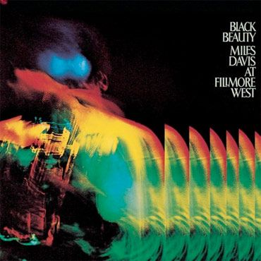
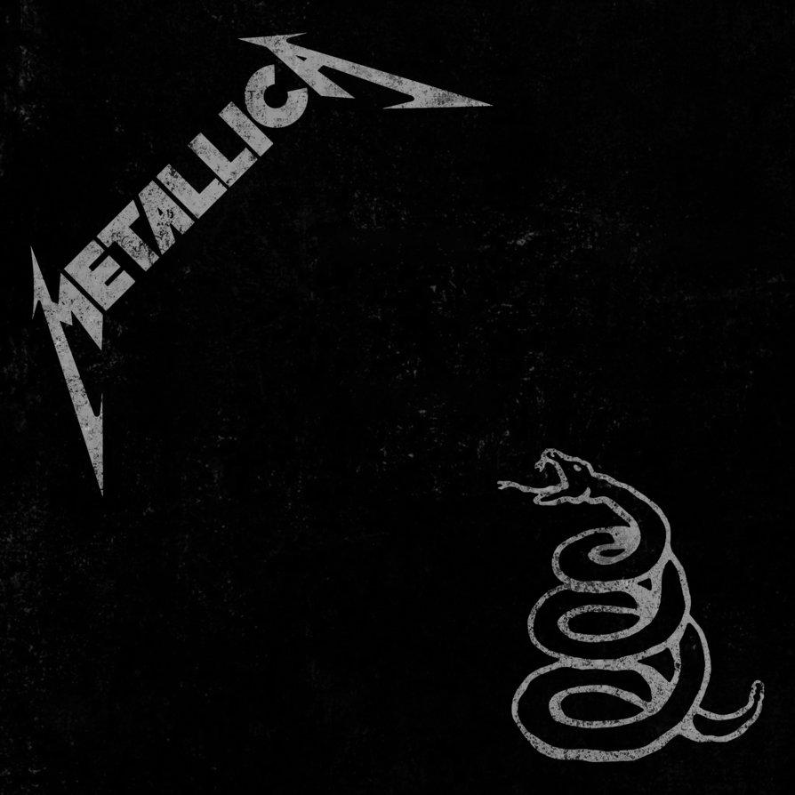
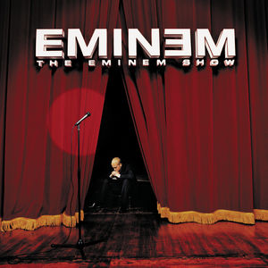
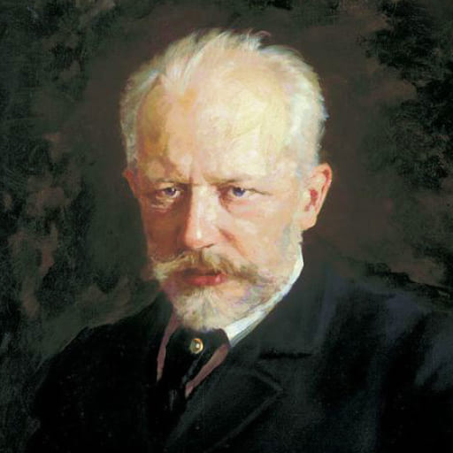
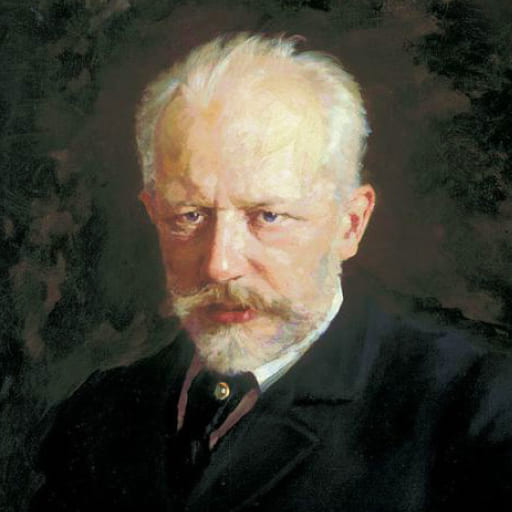

Artiser/Band


Genre fakta
Popmusik är en genre som framhäver enkla melodier, fångande refränger och en rytmiskt framträdande sångstil. Det är känd för sin kommersiella tillgänglighet och dess förmåga att nå en bred publik över olika åldrar och kulturella bakgrunder. Texterna fokuserar ofta på kärlek, ungdom, fest och livsglädje. Popmusik utvecklas ständigt och influeras av olika musikaliska trender och subgenrer.

Jazz är en unik musikgenre som präglas av improvisation, komplexa harmonier och rytmiska variationer. Den uppstod i det tidiga 1900-talets USA och har sin bakgrund i afroamerikansk kultur och musikaliska traditioner. Jazzmusikerna uttrycker sig genom solon och kollektiv improvisation, vilket ger varje framträdande en unik prägel. Genren har också en stark betoning på rytm och groove, och den har historiskt sett varit en plattform för både musikaliskt och socialt uttryck.


Rockmusik är känd för sin kraftfulla rytmik, distinkta gitarriff och energiska framträdanden. Den uppstod på 1950-talet och har sina rötter i blues, country och andra musikaliska traditioner. Rockmusikens texter berör ofta ungdomsrebellion, samhällskritik och personliga erfarenheter. Genren har en stark kulturell inverkan och har spelat en betydande roll i samhället genom att fungera som en röst för motkultur och förändring.


Rapmusik är unik genom sin användning av rytmisk talad eller sjungen text, vanligtvis över en rytmisk bakgrund. Den uppstod i det sena 1970-talets New York och har sitt ursprung i afroamerikansk kultur och gatukultur. Raptexterna utforskar ofta personliga berättelser, samhällsfrågor och politik. Genren har en stark betoning på ordlek, rim och rytm, och den har blivit ett kraftfullt verktyg för självuttryck och samhällsförändring, samt en av de mest inflytelserika musikaliska rörelserna i modern tid.
 

Klassiskmusik är unik genom sin långa historia och sin betoning på komposition, notskrift och instrumental prestation. Den sträcker sig över flera århundraden och omfattar olika stilar och perioder, från barocken till romantiken och moderna kompositioner. Klassisk musik utförs oftast av ensemblar som orkestrar, körer eller solister och har en omfattande repertoar som inkluderar symfonier, konserter, operor och kammarverk. Genren värderar teknisk skicklighet, känslomässigt uttryck och tradition, och den fortsätter att vara en källa till inspiration och beundran över hela världen.